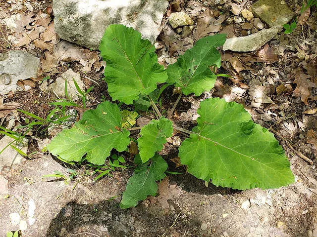

Root or shoot · May–Nov
Burdock root
Arctium minus
Also called Burdock, Bardane
Burdock root is a root or shoot you can forage from May to November across Canada. Huge rhubarb-like leaves woolly underneath; burs in the second year. Dig first-year roots.

When is burdock root in season in Canada?
Burdock root is usually in season May to November. Timing shifts with weather, latitude and altitude.
Where does burdock root grow in Canada?
Burdock root grows across Canada. Regions: British Columbia, Prairies, Ontario, Quebec, Atlantic Canada, The North.
How do you recognise burdock root?
Huge rhubarb-like leaves woolly underneath; burs in the second year. Dig first-year roots.
How do you harvest burdock root?
Dig first-year roots in autumn or early spring with the landowner's permission; they can be long, so use a narrow spade.
How do you eat burdock root?
Kinpira gobo, soups, pickles.
How do you store burdock root?
Store in sand.
What is burdock root good for?
Calories.